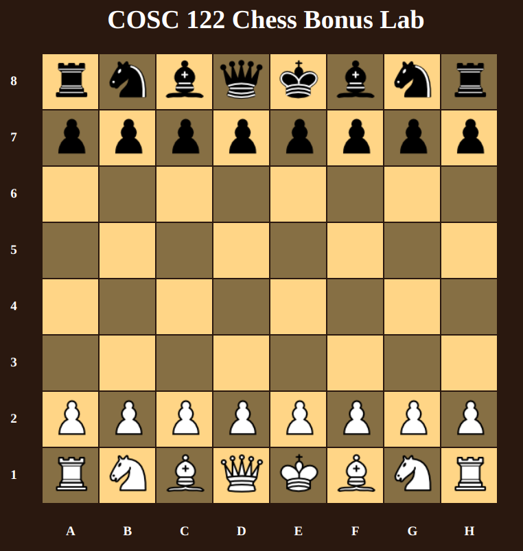
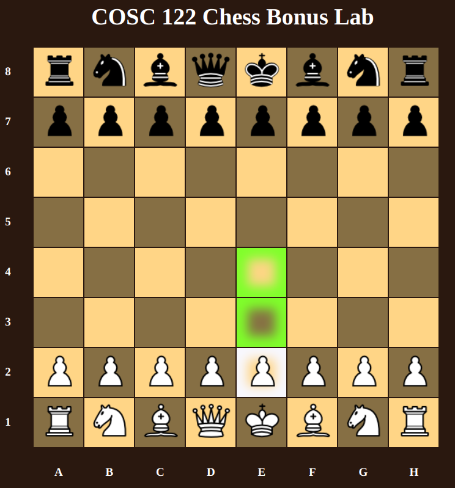
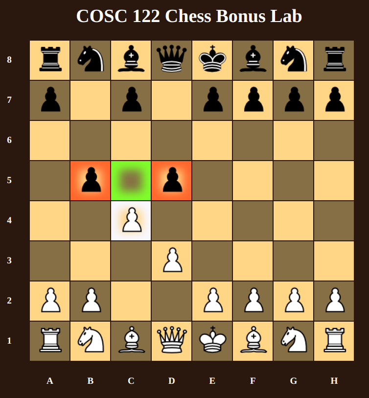
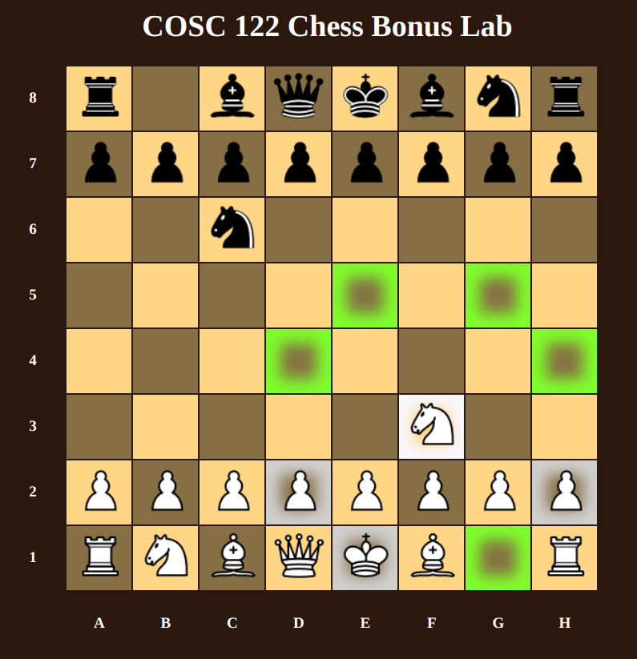

In this lab, we will set up a chess board in a two dimensional array that stores our pieces. A two dimensional array is simply an array that stores more arrays. You can imagine a two dimensional array as a grid where you need to specify two indicies to access any specific part of that grid. For example, if I set up the following 2-D array:
var grid = [
[0, 1, 2],
[3, 4, 5],
[6, 7, 8]
];
var value = grid[0][2];
Our variable, value, will store the number, 2. Notice, that the first refernce is always the row, and the second is the column.
To complete the bonus lab, open the chess.html file in Notepad++ or an IDE of your choice. Follow the Task
instructions that are written as comments in the file. Run the chess.html file in your browser to test it. If
your code is correct, your page should look like this:

Your pawn movement options should look like the following picture on its first turn. (opposite direction for
black pawns)

Your pawn capture options should look like the following picture when there are two enemies diagonally in-front
of it. (opposite direction for black pawns)

Your knight movement options should look like the following picture.

To submit the assignment, upload your finished chess.html file to canvas.